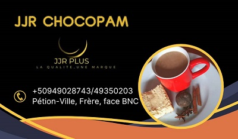
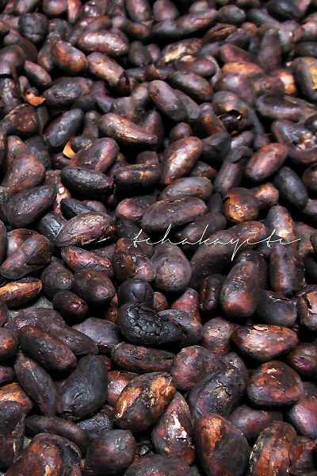
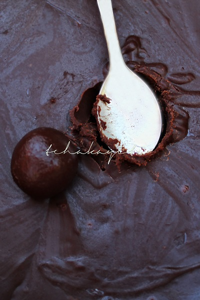
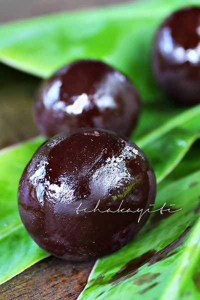

JJR PLUS: JJR ChocoPam et JJR Akasan
De meme q'une mère qui a deux enfants travaille au jour le jour pour le bonheur de ses enfants, JJR Plus est une seule marque qui offre deux produits differents. Et qui ne cesse de travailler pour placer ses produit sur le marché. Qu'il s'agit du Chocolat et de l'Akasan, ce sont des produits qui represent beaucoup de chose pour les responsable de JJR. S'il est vrai que le chocolat reste le premier produit que la marque s'est offert le premier l'akasan reste tout aussi important pour JJR. Toutefois, pour arriver à ses fins, pas mal de difficultés se sont misent sur le chemin de JJR.
Toutefois, les difficultés rencontrés n'ont pas pu empecher JJR à vous apporter le Chocolat "poudre et boul" dans le panier de consommation de nos chers clients...

Toutefois, le chocolat se fait toujours accompagner de l'Aksan qui contribue significativement à l'existence de JJR
Elle a beau résisté aux tempêtes de la concurrence pour se frayer un chemin dans le milieu de la restauration. Aujourd’hui,JJR ne cesse de progresser et marcher sur le chemin du progrès, de l’amélioration pour continuer à satisfaire sa clientèle…
JJR AKASAN, pour votre énergie pour votre gout et pour la qualité